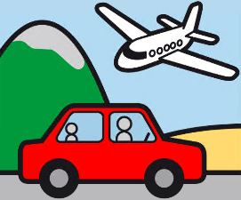
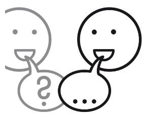
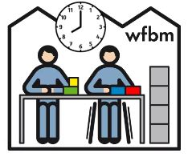
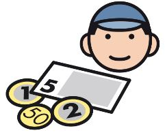
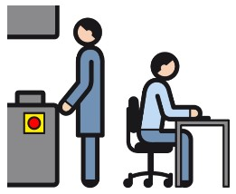
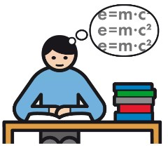
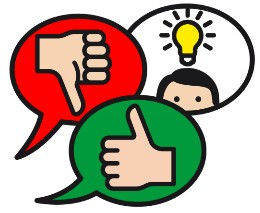
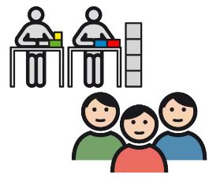
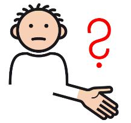

Kapitel 1
🌴 Urlaub
›

Wie viele Urlaubstage habe ich pro Jahr?
›
Du hast Anspruch auf 31 Urlaubstage pro Kalenderjahr –
das sind über 6 Wochen Urlaub.
Mit Schwerbehinderten-Ausweis bekommst du noch 5 Tage zusätzlich.
Du bekommst anteilig weriger Urlaubtage, wenn:
Mit Schwerbehinderten-Ausweis bekommst du noch 5 Tage zusätzlich.
Du bekommst anteilig weriger Urlaubtage, wenn:
- Du erst im Verlaufe des Jahres anfängst
- Du grundsätzlich weniger als 5 Tage in der Woche arbeitest
🧠 Teste dein Wissen
Wie viele Urlaubstage habe ich pro Jahr?
Wie beantrage ich Urlaub?
›
Urlaub beantragst du so:
- Sprich zuerst mit deiner Gruppenleitung.
- Trage die Tage auf deiner Urlaubskarte ein.
- Bitte beantrage deinen Urlaub rechtzeitig.
- Gruppenleitung genehmigt die Tage, wenn es möglich ist.
🧠 Teste dein Wissen
Bei wem beantrage ich meinen Urlaub?
Kapitel 2
🤒 Krankmeldung
›
Was mache ich, wenn ich krank bin?
›
Wenn du krank bist:
- Rufe bis 15 Minuten nach Arbeitsbeginn deine Gruppenleitung an.
- Sag Bescheid, dass du krank bist.
- Ab dem 4. Krankheitstag brauchst du eine ärztliche Bescheinigung.
🧠 Teste dein Wissen
Was muss ich tun, wenn ich krank bin?
Kann ich Termine bei Ärzten, Therapeuten oder Behördern immer in der Arbeitszeit machen?
›
Du solltest diese Termine möglichst außerhalb der Arbeitszeit legen.
In dringenden Fällen oder bei guten Gründen ist es in der Arbeitszeit möglich.
Zum Teil bietet Studjo auch Termine von externen Therapeuten im Studjo-Gebäude an.
In dringenden Fällen oder bei guten Gründen ist es in der Arbeitszeit möglich.
Zum Teil bietet Studjo auch Termine von externen Therapeuten im Studjo-Gebäude an.
🧠 Teste dein Wissen
Darfst du Arztbesuche immer bewusst in die Arbeitszeit legen?

Kapitel 3
⏰ Arbeitszeiten
›
Wann beginnt und endet meine Arbeitszeit?
›
Die typische Arbeitszeit in Vollzeit ist:
- Beginn: 08:00 Uhr
- Ende: 15:15 Uhr
- Frühstücksspause: 10:00 bis 10:20 Uhr
- Mittagspause: 12:00 bis 13:00 Uhr
- Freitags und jeder 1. Dienstag im Monat: Bis 14:45 Uhr
🧠 Teste dein Wissen
Wann beginnt bei Vollzeit üblicherweise die Arbeit bei Studjo?
Gibt es Möglichkeiten für Teilzeit?
›
Du hast vor allem 2 Modelle für Teilzeit:
- Teilzeit 1 morgens : 08:00 bis 12:00 Uhr
- Teilzeit 2 nachmittags: 11:15 bis 15:15 Uhr
🧠 Teste dein Wissen
Welche Modelle für Teilzeit gibt es?

Kapitel 4
💰 Entgelt
›
Wann bekomme ich mein Entgelt?
›
Dein Entgelt wird einmal im Monat überwiesen –
immer am letzten Werktag.
Du bekommst auch einen Entgeltnachweis, auf dem alles erklärt ist.
Du bekommst auch einen Entgeltnachweis, auf dem alles erklärt ist.
🧠 Teste dein Wissen
Wie oft bekomme ich mein Entgelt?
Wie kann ich mehr Entgelt bekommen?
›
Die Höhe deines Entgelts hängt ab von:
- Arbeitsplatz - Kompliziertere Arbeit bringt mehr Geld
- Arbeitsmenge - Höheres Tempo bringt mehr Geld
- Arbeitsgüte - Gute Qualität bringt mehr Geld
- Soziale Aspekte - Angemessenes Verhalten bringt mehr Geld
- Bonus - Besondere Bedingungen bringen mehr Geld
🧠 Teste dein Wissen
Wie bekomme ich mehr Entgelt?

Kapitel 5
🔨 Arbeit
›
Welche Arten von Arbeit gibt es bei Studjo?
›
Studjo bietet verschiedene Berufsfelder an:
Neben diesen Tätigkeiten bietet Studjo viele Möglichkeiten für Außenarbeit in anderen Firmen an.
- Montage, Verpackung, Lager: Teile zusammenbauen, verpacken und verschicken
- Hauswirtschaft: Küche, Reinigung und Wäscherei
- Garten und Schreinerei: Arbeiten in der Natur oder mit Holz
- Büro und Lettershop: Einfache Büroaufgaben, Postverwaltung und Bedruckungen
Neben diesen Tätigkeiten bietet Studjo viele Möglichkeiten für Außenarbeit in anderen Firmen an.
🧠 Teste dein Wissen
Mit wem besprichst du, in welcher Gruppe du arbeitest?
Was passiert, wenn ich meine Arbeit nicht schaffe?
›
Kein Problem! Bei Studjo bekommst du immer Unterstützung.
- Deine Gruppenleitung hilft dir, wenn du nicht weiterkommst.
- Die Aufgaben werden an deine Fähigkeiten angepasst.
- Niemand wird bestraft, wenn etwas nicht klappt.
🧠 Teste dein Wissen
Was tust du, wenn du bei der Arbeit Hilfe brauchst?

Kapitel 6
📚 Qualifizierung
›
Was ist eine Qualifizierung?
›
Eine Qualifizierung ist eine Schulung oder ein Kurs,
bei dem du etwas Neues lernst.
Bei Studjo kannst du zum Beispiel lernen:
Zum Beispiel auch durch arbeitsbegleitende Angebote (AbA).
Bei Studjo kannst du zum Beispiel lernen:
- Neue Arbeitstechniken und Handgriffe
- Lesen und Schreiben verbessern
- Computer bedienen
- Soziale Fähigkeiten stärken
Zum Beispiel auch durch arbeitsbegleitende Angebote (AbA).
🧠 Teste dein Wissen
Was ist das Ziel einer Qualifizierung?
Wie kann ich eine Qualifizierung oder berufliche Bildung bekommen?
›
So kannst du mitmachen:
Im Berufsbildungsbereich (BBB) zum Beispiel auch digital mit eLearning.
- Sprich mit deiner Gruppenleitung über dein Interesse.
- Zusammen schaut ihr, welche Qualifizierung zu dir passt.
- Die Teilnahme wird in deinem Plan vom Sozialen Dienst festgehalten.
Im Berufsbildungsbereich (BBB) zum Beispiel auch digital mit eLearning.
🧠 Teste dein Wissen
Bei wem meldest du dich für eine Qualifizierung?

Kapitel 7
📣 Beschwerden
›
Was kann ich tun, wenn mich etwas stört?
›
Du hast das Recht, dich zu beschweren! Das kannst du tun:
- Sprich direkt mit deiner Gruppenleitung vor Ort.
- Wende dich an den Werkstattrat – er ist vor allem in Sprechstunden für dich da.
- Nutze das Beschwerdeverfahren mit den Meldewänden in jeder Betriebsstätte.
🧠 Teste dein Wissen
Werde ich bestraft, wenn ich mich beschwere?
Wie läuft eine Beschwerde ab?
›
Eine Beschwerde läuft so ab:
- Schritt 1: Du sprichst mit der Gruppenleitung oder dem Werkstattrat.
- Schritt 2: Deine Beschwerde wird ernst genommen und besprochen.
- Schritt 3: Es wird gemeinsam nach einer Lösung gesucht.
- Schritt 4: Du bekommst eine Rückmeldung, was passiert ist.
🧠 Teste dein Wissen
Was bringt eine Beschwerde?

Kapitel 8
🗣️ Werkstattrat
›
Was ist der Werkstattrat?
›
Der Werkstattrat ist die Interessenvertretung der Mitarbeitenden mit Werkstattvertrag.
Die Mitglieder werden geheim und freiwillig von Mitarbeitenden im Arbeitsbereich gewählt.
Die Wahl ist alle 4 Jahre.
Werkstatträte setzen sich für eure Rechte und Wünsche ein.
Sie sprechen mit der Bereichsleitung und der Geschäftsleitung.
Die Mitglieder werden geheim und freiwillig von Mitarbeitenden im Arbeitsbereich gewählt.
Die Wahl ist alle 4 Jahre.
Werkstatträte setzen sich für eure Rechte und Wünsche ein.
Sie sprechen mit der Bereichsleitung und der Geschäftsleitung.
🧠 Teste dein Wissen
Wer wählt den Werkstattrat?
An wen wende ich mich bei einem Problem?
›
Bei Problemen kannst du dich an verschiedene Personen wenden:
- Gruppenleitung: Zum Beispiel für alltägliche Fragen
- Werkstattrat: Zum Beispiel, wenn du dich ungerecht behandelt fühlst
- Sozialdienst: Zum Beispiel für bei schwierigen Themen oder Themen mit Behörden
- Geschäftsleitung: Zum Beispiel bei komplizierten Themen als letzte Möglichkeit
🧠 Teste dein Wissen
Was macht der Werkstattrat?

Kapitel 9
📋 Sonstiges
›
Was bietet Studjo an sozialen Aktivitäten an?
›
Soziale Aspekte neben der Arbeit sind zum Beispiel:
- Der jährliche Gruppen-Ausflug
- Werkstattfeste in den Betriebsstätten
- Geburtstagsfeiern mit kleinem Geschenk zum Monatsende
- Jubiläums-Ausflug für Jubilare
- Oder die Weihnachtsfeier zum Ende des Arbeitsjahres
🧠 Teste dein Wissen
Was wird zum Beispiel als soziale Aktivität angeboten?
Wofür ist das Studjo Infoterminal?
›
Das Infoterminal ist für alle Mitarbeitenden mit Werkstattvertrag da. Hier findest du:
- Aktuelle Nachrichten in Leichter Sprache
- Wichtige Infos über Studjo
- Den bebilderten Speise-Plan
- Das arbeitsbegleitende Angebot und wichtige Termine
- Und die häufigen Fragen und Antworten – genau hier!
🧠 Teste dein Wissen
Für wen ist das Studjo Info-Terminal?